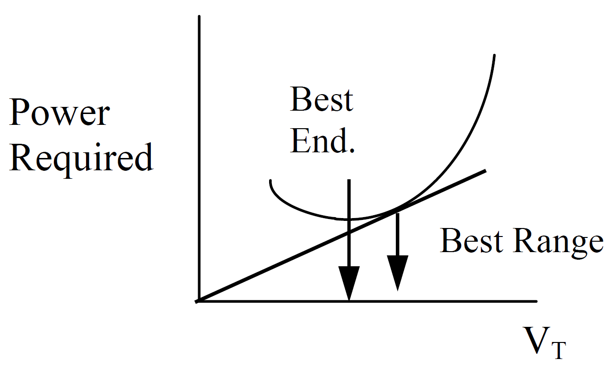
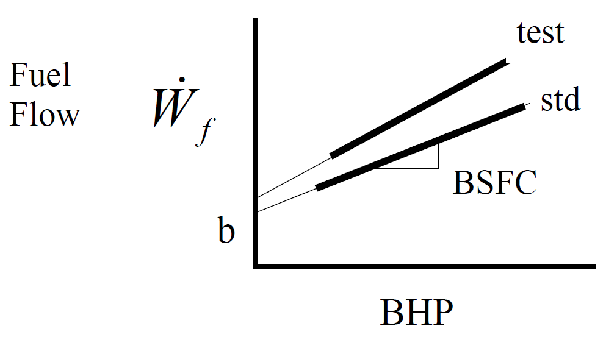
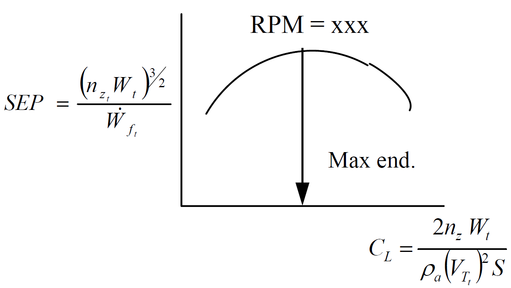
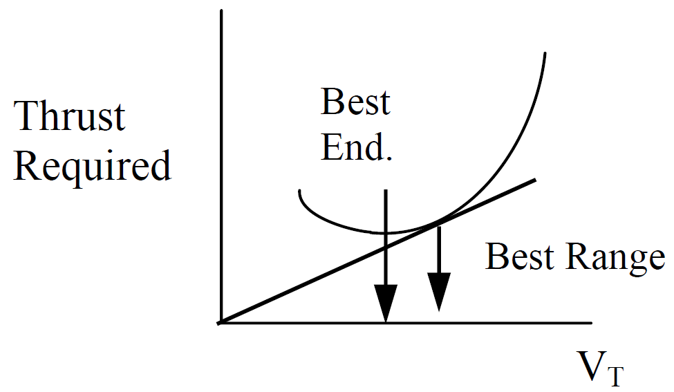
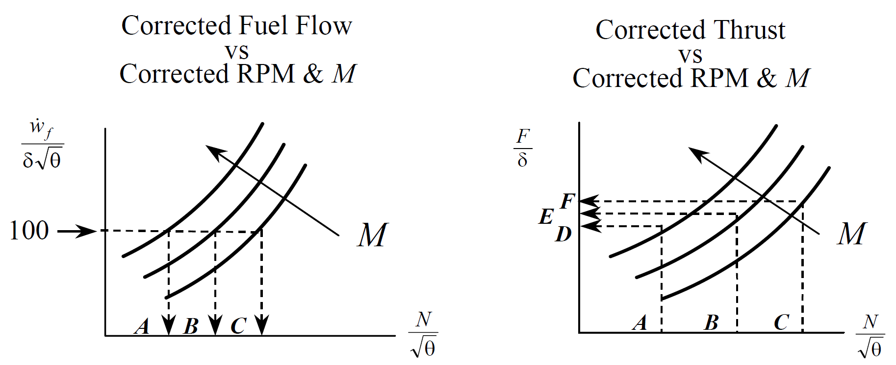
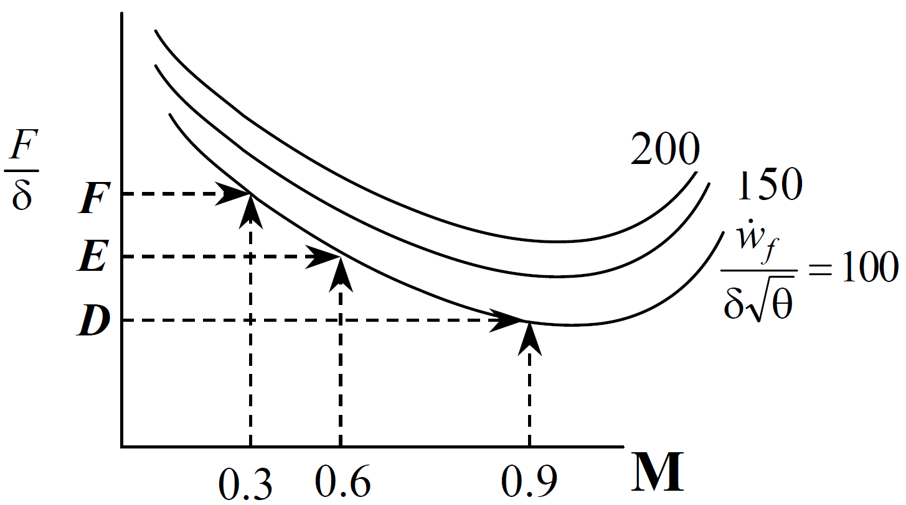
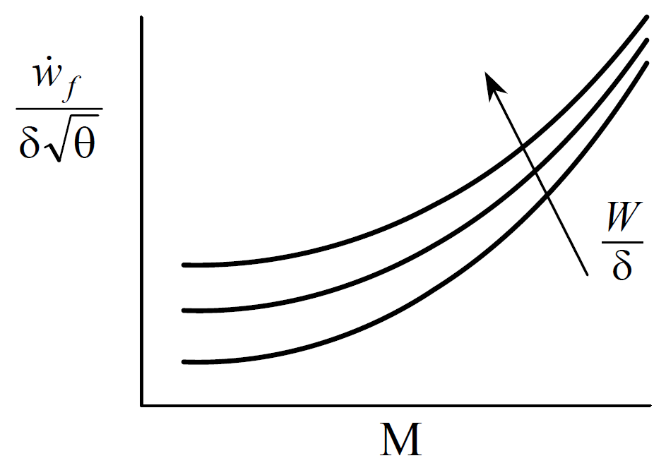
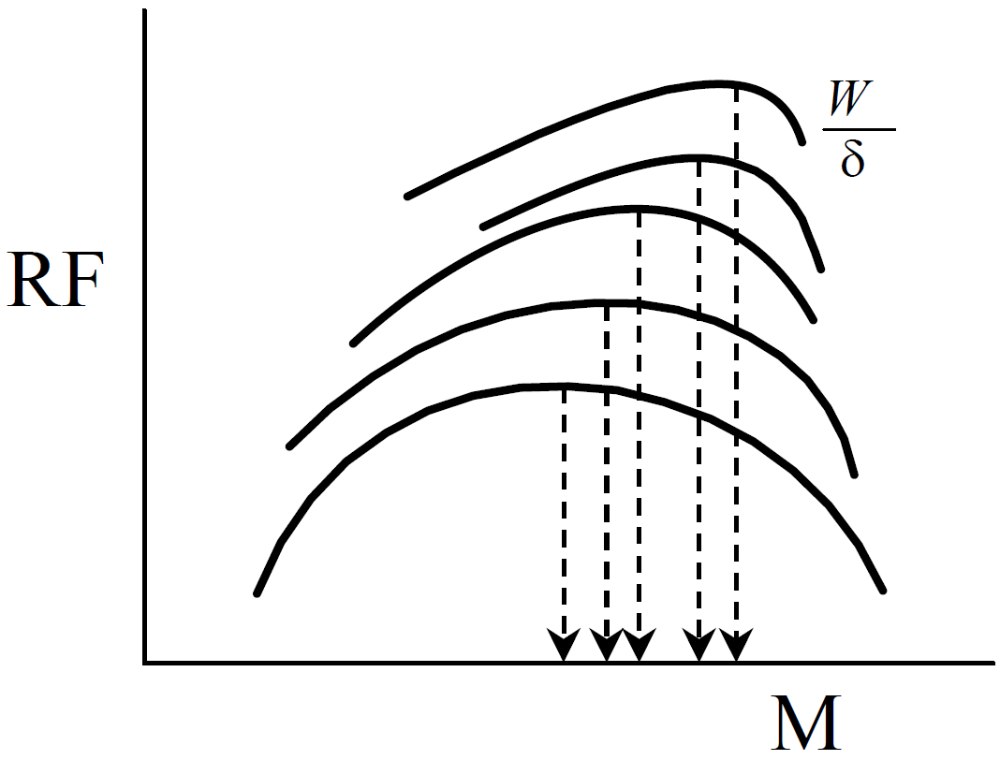

12 Fixed-Wing Performance Standardization
12.1 Recurring Abbreviations
(references 10.5.1-10.5.5)
| \(a\) | acceleration |
| \(\mathrm{BHP}\) | brake horsepower |
| \(\mathrm{BSFC}\) | brake specific fuel consumption (fuel flow per horsepower per hour) |
| \(C_D\) | drag coefficient |
| \(C_{D_i \mathrm{IGE}}\) | induced drag coefficient in ground effect |
| \(C_{D_i \mathrm{OGE}}\) | induced drag coefficient out of ground effect |
| \(C_L\) | lift coefficient |
| \(C_{L_i \mathrm{IGE}}\) | lift coefficient in ground effect |
| \(C_{L_i \mathrm{OGE}}\) | lift coefficient out of ground effect |
| \(\mathrm{cg}\) | center of gravity |
| \(D\) | drag |
| \(\frac{F}{\delta}\) | corrected thrust |
| \(F_e\) | ram thrust |
| \(F_{\text{e}}\) | excess thrust |
| \(F_g\) | gross thrust |
| \(F_n\) | net thrust |
| \(g\) | reference acceleration due to gravity \(\left( 32.174 \frac{\text{ft}}{\text{sec}^2} \right)\) |
| \(\mathrm{GE}_{C_D}\) | ground effect correction factor for drag coefficient |
| \(\mathrm{GE}_{C_L}\) | ground effect correction factor for lift coefficient |
| \(H\), \(h\) | geopotential altitude |
| \(H_c\) | pressure altitude |
| \(L\) | lift |
| \(L_W\) | lift of the wing |
| \(M\) | Mach number |
| \(m\) | mass |
| \(N_{x_w}\) | longitudinal load factor along flight path (wind axis) |
| \(N_{z_w}\), \(n_z\) | load factor normal to flight path |
| \(P\) | power output |
| \(P_0\) | standard ambient pressure sea level \(\left( 2116.22 \frac{\text{lb}}{\text{ft}^2} = 29.921 \text{ in Hg} \right)\) |
| \(P_a\) | ambient pressure |
| \(P_{iw}\) | standard day sea-level power required |
| \(P_m\) | mission-day power required |
| \(P_s\) | standard power required |
| \(P_s\) | specific excess power |
| \(P_t\) | test-day power required |
| \(q\) | dynamic pressure |
| \(R\) | range |
| \(R/C\) | rate of climb |
| \(R_n\) | Reynolds number |
| \(\mathrm{RF}\) | range factor |
| \(S\) | reference wing area |
| \(S_a\) | horizontal air distance |
| \(S_g\) | ground roll |
| \(S_{\mathrm{LD}}\) | total landing distance |
| \(S_{\mathrm{TO}}\) | total takeoff distance |
| \(\mathrm{SR}\) | specific range |
| \(T\) | ambient air temperature (absolute) |
| \(T\) | thrust |
| \(T_0\) | ambient temperature sea level standard \(\left( 288.15\text{ K} = 15.0°\text{C} \right)\) |
| \(V\) | inertial speed |
| \(V_c\) | calibrated airspeed |
| \(V_e\) | equivalent airspeed |
| \(V_{iw}\) | standard day sea-level true airspeed |
| \(V_T\) | true airspeed |
| \(V_{T_s}\) | test true airspeed |
| \(V_{T_t}\) | test true airspeed |
| \(\dot{W}_f\) | Fuel Flow |
| \(\dot{W}_{f_{iw}}\) | standard day sea-level fuel flow |
| \(W_s\) | weight standard |
| \(W_t\) | test weight |
| \(\alpha\) | angle of attack |
| \(\beta\) | sideslip angle |
| \(\gamma\) | flightpath angle |
| \(\delta\) | ambient air pressure ratio |
| \(\iota_T\) | thrust incidence angle |
| \(\mu\) | rolling coefficient of friction |
| \(\sigma\) | ambient air density ratio |
| \(\phi\) | bank angle |
| \(\omega\) | turn rate (rad/sec) |
12.2 Standardization Techniques
(ref 12.5)
Performance data is usually corrected to “standard” conditions which are specified values of weight, altitude, \(\mathrm{cg}\) and Mach number. The process also corrects data to some standard ambient air temperature, usually defined by the \(1976\) U.S. Standard Atmosphere. In some cases the data is corrected to “standard hot” day or “standard cold” day conditions which are a specified increment relative to the true standard conditions.
The standardization process usually relies on models of drag, thrust (or power), fuel flow, and propeller efficiency if appropriate. The overall principle is to collect test data as near as practical to standard conditions \(\left( \pm 10\% \right)\) and correct the results to standard using the models. Even with a \(10\%\) modeling error, correcting test data that is \(10\%\) from standard leads to only \(1\%\) total error in the standardized results.
The most common of the two standardization methods is the difference or increment method which adds a correction to the test day parameter. This correction is the difference between the model predictions for standard and test conditions:
\[ P_s = P_t + \left( P_s' - P_t' \right) \tag{12.1} \]
where
- \(P_s\) = standardized parameter
- \(P_t\) = test day parameter
- \(P_s'\) = standard day parameter predicted by models
- \(P_t'\) = test day parameter predicted by models
The parameter of interest can be one of the basic modeling values such as thrust, drag, power, or fuel flow. The parameter can also be the end result of the predictive process, and may include values like takeoff/landing distance, climb/sustained turning capability, or cruise range.
The ratio method is the other standardization process. It corrects to standard conditions by multiplying the test values by a correction factor. This factor is the ratio of the model predictions for standard and test conditions.
\[ P_s = P_t \left( \frac{P_s'}{P_t'} \right) \tag{12.2} \]
The preferred approach is whichever gives the lowest total error. If the prediction models are in error by approximately a constant percentage, then the ratio method yields the least error. If the models are in error by approximately a constant magnitude, then the increment method yields the least error. Less exact empirical methods can also be used.
12.3 Takeoff Distance
(refs 12.1, 12.2, 12.5)
The total takeoff distance, \(S_{\mathrm{TO}}\), is the sum of the ground roll distance, \(S_g\), from brake release to main wheel liftoff, and the horizontal component of the air distance, \(S_a\), from liftoff to main gear reaching either \(35\) or \(50\) feet altitude-depending on the requirements.
\[ S_{\mathrm{TO}} = S_g + S_a \tag{12.3} \]
Both \(S_g\) and \(S_a\) can be standardized using the increment or ratio method, or by empirical relations. The empirical methods are useful when detailed aircraft models are not available. The more exact process of predicting takeoff distance using models is described in section 12.3.2.
12.3.1 Empirical Standardization Method
First correct for the effects of the test day wind. Define headwind velocity as \(V_w\), liftoff true airspeed as \(V_{\mathrm{LO}}\), and test day ground roll as \(S_{g_w}\). With a typical variation of thrust per headwind, estimate the test day zero-wind ground roll, \(S_{g_{zw}}\), using the following empirical equation:
\[ S_{g_{zw}} = S_{g_w} \left( \frac{V_{\mathrm{LO}}}{V_g} \right)^{1.85} \tag{12.4} \]
If the average thrust is not appreciably affected by velocity, then the exponent should be \(2.0\) in lieu of \(1.85\). The zero-wind air distance, \(S_{a_t}\), correction is
\[ S_{a_t} = S_{a_w} + V_w t \tag{12.5} \]
where \(t\) is the time from liftoff to \(35\) (or \(50\)) feet altitude.
The second correction is for the effect of runway slope (\(\theta\), positive uphill) and therefore applies only to the ground roll. Correct the above zero-wind distance, \(S_{g_{zw}}\), to the test day zero-slope distance, \(S_{g_t}\), as follows:
\[ S_{g_t} = S_{g_{zw}} \left[ 1 - \frac{W \sin \theta}{\left[ F_{\text{ex}} \right]_{\text{avg}}} \right] \tag{12.6} \]
If the average excess thrust is not known, then approximate \(F_{\text{ex}}\) as that at \(70\%\) of the liftoff airspeed or from the zero-wind ground roll distance:
\[ \left[ F_{\text{ex}} \right]_{\text{avg}} \approx \frac{m V_{\mathrm{LO}^2}}{2 S_{g_{zw}}} \tag{12.7} \]
After correcting the test day distance to zero wind and slope, use the following empirical equations to correct for non-standard weight, density, and temperature. Any desired values can be treated as the “standard” conditions.
Aircraft Propulsion Type and Standard Day Distance
Fixed pitch propellers8
\[\begin{align} S_{gs} &= S_{gt} \left( \frac{W_s}{W_t} \right)^{2.4} \left( \frac{\sigma_s}{\sigma_t} \right)^{-2.4} \left( \frac{T_{as}}{T_{at}} \right)^{0.5} \\ S_{as} &= S_{at} \left( \frac{W_s}{W_t} \right)^{2.2} \left( \frac{\sigma_s}{\sigma_t} \right)^{-2.2} \left( \frac{T_{as}}{T_{at}} \right)^{0.6} \end{align}\]
Turbo-propeller aircraft9
\[\begin{align} S_{gs} &= S_{gt} \left( \frac{W_s}{W_t} \right)^{2.6} \left( \frac{\sigma_s}{\sigma_t} \right)^{-1.7} \left( \frac{N_s}{N_t} \right)^{-0.7} \left( \frac{P_s}{P_t} \right)^{-0.9} \\ S_{gs} &= S_{gt} \left( \frac{W_s}{W_t} \right)^{2.3} \left( \frac{\sigma_s}{\sigma_t} \right)^{-1.2} \left( \frac{N_s}{N_t} \right)^{-0.8} \left( \frac{P_s}{P_t} \right)^{-1.1} \end{align}\]
Large jet aircraft10
\[\begin{align} S_{gs} &= S_{gt} \left( \frac{W_s}{W_t} \right)^{2.3} \left( \frac{\sigma_s}{\sigma_t} \right)^{-1.0} \left( \frac{F_{ns}}{F_{nt}} \right)^{-1.3} \\ S_{gs} &= S_{gt} \left( \frac{W_s}{W_t} \right)^{2.3} \left( \frac{\sigma_s}{\sigma_t} \right)^{-0.7} \left( \frac{F_{ns}}{F_{nt}} \right)^{-1.6} \end{align}\]
where
- \(P_t\) = Test day brake power at the propeller
- \(P_s\) = Standard day brake power at the propeller
- \(N_t\) = Test day propeller \(\text{RPM}\)
- \(N_s\) = Standard day propeller \(\text{RPM}\)
- \(F_{nt}\) = \(T_{at}\) = Average test net thrust (approx \(0.94 \times\)static thrust @ test conditions)
- \(F_{ns}\) = \(T_{as}\) = Average standard net thrust (approx \(0.94 \times\)static thrust @ standard conditions)
12.3.2 Takeoff Distance Prediction
(refs 12.1, 12.5)
Estimating takeoff ground roll without numerical methods
Define
- \(V\) = airspeed
- \(V_{\mathrm{TO}}\) = liftoff airspeed
- \(S_g\) = ground roll distance
- \(S_w\) = reference wing area
- \(F_{\text{ex}}\) = excess thrust
- \(F_n\) = net thrust
- \(C_{L_{\mathrm{IGE}}}\) = lift coefficient in ground effect
- \(C_{D_{\mathrm{IGE}}}\) = drag coefficient in ground effect
- \(W\) = aircraft weight
- \(m\) = rolling friction
- \(g\) = acceleration due to gravity
- \(A\) = acceleration = g*Fex/
Assuming zero initial speed for takeoff run, ground roll distance
\[ S_g = \frac{V_{\mathrm{TO}}^2 \cdot W} {2 \cdot g \cdot \left( T_{\text{avg}} - \mu \cdot W + \frac{1}{6} \cdot \rho \cdot S_w \cdot V_{\mathrm{TO}}^2 \cdot \left( \mu \cdot C_{L_{\mathrm{IGE}}} - C_{D_{\mathrm{IGE}}} \right) \right) } \tag{12.8} \]
Where
- \(F_{n_{\text{avg}}}\) may be estimated as the average of static thrust and net thrust at liftoff airspeed. If the initial airspeed is non-zero, its value should be inserted into Equation (12.4) in place of \(V_{\mathrm{LO}}\) and the answer subtracted from the zero-wind case.
- \(\mu\) is the rolling friction coefficient (typically between \(0.015\) and \(0.025\) for hard dry runways), and
- \(C_{L_{\mathrm{IGE}}}\) is the lift coefficient in ground effect while at ground roll attitude.
Estimate \(C_{L_{\mathrm{IGE}}}\) by determining the out-of-ground-effect lift coefficient, \(C_{L_{\mathrm{OGE}}}\), at the ground roll angle of attack and correcting it as follows:
\[ C_{L_{\mathrm{IGE}}} = C_{L_{\mathrm{OGE}}} \mathrm{GE}_{C_L} \tag{12.9} \]
where
- the ground effect factor, \(\mathrm{GE}_{C_L} = 0.8609 - 0.6282 \log_{10} \left( \frac{h}{b} \right)\) and
- \(h\) is the wing height above the surface and
- \(b\) is the wingspan.
The above correction is not used above the height that predicts
\[ \mathrm{GE}_{C_L} < 1 \]
\(C_{D_{\mathrm{IGE}}}\) is the induced drag coefficient while in ground effect. Estimate this by determining the out-of-ground-effect drag coefficient, \(C_{D_{\mathrm{OGE}}}\), at the appropriate angle of attack and correcting it as follows:
\[ C_{D_{\mathrm{IGE}}} = C_{D_{\mathrm{OGE}}} \mathrm{GE}_{C_D} \tag{12.10} \] where the ground effect factor, \(\mathrm{GE}_{C_D} = 0.2412 \ln \left( \frac{h}{b} \right) + 1.0829\)
The above correction is not used above the height that predicts
\[ \mathrm{GE}_{C_D} > 1 \]
A direct approximation of takeoff air distance requires the desired speeds at liftoff and at 50 feet (typically \(1.1 V_s\) and \(1.2 V_s\), respectively). It also requires an estimate of the average excess thrust as the aircraft climbs out of ground effect.
\[ S_a = \frac{W}{\left( T - D \right)_{\text{avg}}} \left[ \frac{V_{50}^2 - V_{\mathrm{LO}}^2}{2g} + 50 \right] \tag{12.11} \]
A direct approximation of the total takeoff distance, \(S_{\mathrm{TO}}\) can be calculated as the sum of the ground and air distances or can be estimated by multiplying the ground roll distance by a “planform factor,” \(F_{\text{pl}}\).
\[ S_{\mathrm{TO}} = S_g F_{\text{pl}} \tag{12.12} \]
\(F_{\text{pl}}\) combines the effects of wing type, thrust-to-weight ratio, and pilot technique. The following values characterize the typical aircraft.
- straight wing: \(F_{\text{pl}} = 1.15\)
- swept wing: \(F_{\text{pl}} = 1.36\)
- delta wing: \(F_{\text{pl}} = 1.58\)
A more exact prediction of takeoff performance (ref 12.5) requires accurate thrust and drag models and an integration of the aircraft’s velocity over the takeoff time. This is equivalent to a double integration of the aircraft’s acceleration or its specific excess thrust.
\[ S_{\mathrm{TO}} = \int V_T \mathop{dt} = \iint a \mathop{dt} = \iint \frac{F_{\text{ex}}}{m} \mathop{dt} = \frac{1}{m} \iint F_{\text{ex}} \mathop{dt} \tag{12.12} \]
This double integration can be performed numerically or graphically. Alternately, use planar kinematics and sum the distances required to accelerate between incremental true airspeeds from brake release, \(V_0\), to the true airspeed when the aircraft reaches the takeoff altitude, \(V_{50'}\).
\[ S_{\mathrm{TO}} = \frac{m}{2} \sum_{V_0}^{V_{50'}} \frac{V_2^2 - V_1^2}{F_{\text{ex}}} \tag{12.13} \]
Both methods above are typically split into pre-rotation ground roll, rotation/post-rotation ground roll, and airborne segments. Both methods require calculation of the excess thrust, addressed below.
Solving for the excess net thrust during the ground roll for either takeoff or landing cases requires a simultaneous solution of the three equations of motion along the aircraft’s longitudinal & vertical axes and about the pitch axis. These equations (in the above order) are as follows:
\[ F_{\text{ex}}+ \mu_{\text{nw}} R_{\text{nw}} + \mu_m R_m = F_g \cos \iota_T + F_e - D_{\text{wb}} - D_t - W \sin \theta_{\text{rw}} \tag{12.14} \]
\[ R_{\text{nw}} + R_m = W \cos \theta_{\text{rw}} - L_w - L_t \tag{12.15} \]
\[ \begin{split} \left( X_1 + X_2 \right) R_{\text{nw}} = W& \cos \theta_{\text{rw}} X_2 \\ &+ W \sin \theta_{\text{rw}} Z_1 \\ &+ \left( F_g \cos \left( \theta + \iota_T \right) - F_e \right) Z_1 \\ &+ L_t \left( X_3 + X_4 - X_2 \right) \\&- L_w \left( X_2 - X_3 \right) \\ &- D_t \left( Z_1 + Z_2 \right) \end{split} \tag{12.16} \]
where
- \(F_{\text{e}}\) = excess net thrust
- \(\mu_{\text{nw}}\) = nose wheel coefficient of friction (about \(0.02\) for takeoff, \(0.50\) for maximum dry runway braking)
- \(R_{\text{nw}}\) = reaction force (weight) on nose wheel (positive)
- \(\mu_m\) = main wheel coefficient of friction (positive)
- \(R_m\) = reaction force (weight) on main wheel (positive)
- \(F_g\) = gross engine thrust (positive, aligned with engine axis)
- \(\iota_T\) = thrust incidence angle (positive denotes thrust that generates lift)
- \(F_e\) = ram thrust (or drag) due to momentum change of the air outside the engine, measured along drag axis- aligned with relative wind (typically negative at low speed, positive at high speed)
- \(D_{\text{wb}}\) = aerodynamic drag of wing and body (excludes horizontal tail drag)
- \(D_t\) = aerodynamic drag of horizontal tail (positive aft)
- \(W\) = aircraft weight (positive)
- \(\theta_{\text{rw}}\) = runway slope (positive denotes uphill)
- \(L_w\) = main wing lift (positive denotes up)
- \(L_t\) = horizontal tail (positive denotes up)
- \(X_1\) = distance from nose gear to aircraft cg (positive)
- \(X_2\) = distance from the main gear to aircraft cg (positive)
- \(Z_1\) = distance from the ground plane to the aircraft body axis (positive)
- \(\theta\) = aircraft pitch attitude (positive denotes nose up)
- \(X_3\) = horizontal distance from the wing’s aerodynamic center to aircraft \(\mathrm{cg}\) (positive)
- \(X_4\) = horizontal distance from the wing’s aerodynamic center to the horizontal tail’s aerodynamic center (positive)
- \(Z_2\) = vertical distance from the horizontal tail’s aerodynamic center to the aircraft body axis (positive)
The previous equations were arranged so that the right hand side of each can be abbreviated as \(A_1\), \(A_2\), and \(A_3\) respectively. This step allows for a compact matrix form of the equations using a \(3 \times 3\) matrix.
\[ \begin{bmatrix} 1 & \mu_{\text{mw}} & \mu_m \\ 0 & 1 & 1 \\ 0 & X_1 + X_2 & 0 \end{bmatrix} \begin{bmatrix} F_{\text{ex}} \\ R_{\text{mw}} \\ R_m \end{bmatrix} = \begin{bmatrix} A_1 \\ A_2 \\ A_3 \end{bmatrix} \]
Solve for \(F_{\text{ex}}\) by pre-multiplying both sides by the inverse of the first matrix.
\[ \begin{bmatrix} F_{\text{ex}} \\ R_{\text{mw}} \\ R_m \end{bmatrix} = \begin{bmatrix} 1 & \mu_{\text{mw}} & \mu_m \\ 0 & 1 & 1 \\ 0 & X_1 + X_2 & 0 \end{bmatrix}^{-1} \begin{bmatrix} A_1 \\ A_2 \\ A_3 \end{bmatrix} \]
Although wheel reaction forces are not required for takeoff distance prediction, they are useful for accurate calculation of rotation capability and for braking effectiveness during landing ground rolls. For takeoff calculations, several simplifying assumptions can be made such as:
\[\begin{align} \mu_{\text{nw}} &= \mu_m = 0.02 \\ F_g &\gg F_e \\ D_t &= 0 \end{align}\]
This above approach can be repeated for the segment between rotation and liftoff. This is slightly more complicated because the changing angle of attack alters drag and acceleration.
Precise predictions of the takeoff air distance can be made by applying Equation (12.11) in small increments using accurate models that describe thrust as a function of airspeed and the lift & drag changes due to climbing out of ground effect.
Along with the incremental \(S_g\) and \(S_a\) calculations, the time to accelerate between the corresponding incremental velocities can be calculated as
\[ \Delta t = m \frac{V_2 - V_1}{F_{\text{ex}}} \]
12.4 Landing Distance
(refs 12.1, 12.2)
The total landing distance, \(S_{\mathrm{LD}}\), is the sum of the ground roll distance (\(S_g\), from touchdown to full stop) and the horizontal component of the air distance (\(S_a\), from the screen height to touchdown). The screen height can be either \(35\) or \(50\) feet above the surface, depending on the requirements
\[ S_{\mathrm{LD}} = S_g + S_a \]
Both \(S_g\) and \(S_a\) can be standardized according to the increment or ratio methods described by Equations (12.1) and (12.2), or by empirical relations. The empirical methods are useful when detailed aircraft models are not available. The more exact process of predicting landing distance using models is described in section 12.4.2.
12.4.1 Empirical Standardization Method
First correct for the effects of the test day wind. Define headwind velocity as \(V_w\), touchdown true airspeed as \(V_{\mathrm{TD}}\), and test day ground roll as \(S_{g_w}\). With a typical variation of thrust per headwind, estimate the test day zero-wind ground roll, \(S_{g_{zw}}\), using the approach applied to takeoff ground roll:
\[ S_{g_{zw}} = S_{g_w} \left( \frac{V_{\mathrm{LO}}}{V_g} \right)^{1.85} \tag{12.17} \]
If the average thrust is not appreciably affected by velocity, then the exponent should be \(2.0\) in lieu of \(1.85\).
Apply Equation (12.5) to correct to the zero-wind air distance (where \(t\) is the time to descend from the screen height to touchdown).
To correct to a zero-slope runway, apply Equation (12.6) to the zero-wind ground roll distance (note that \(F_{\text{ex}}\) is negative). If the average excess thrust is not known, then approximate \(\left[ F_{\text{ex}} \right]_{\text{avg}}\) as that at \(70\%\) of the touchdown airspeed. Alternately, approximate \(\left[ F_{\text{ex}} \right]_{\text{avg}}\) from the zero-wind ground roll distance using
\[ \left[ F_{\text{ex}} \right]_{\text{avg}} \approx \frac{m V_{\mathrm{TD}}^2}{2 S_{g_{zw}}} \tag{12.18} \]
After correcting the test day distance to zero wind and slope, use the following empirical equations to correct the ground roll to standard weight and air density.
\[ S_{g_s} = S_{g_t} \left[ \frac{Ws}{Wt} \right]^2 \frac{\sigma_t}{\sigma_s} \tag{12.19} \]
Any desired values can be treated as the “standard” conditions.
Correct the air distance to standard weight and air density using the zero-wind air distance as follows (for a \(50\)-foot screen height)
\[ S_{a_s} = S_{a_t} \left[ \frac{Ws}{Wt} \right]^{2 + \frac{h_v}{h_v + 50}} \left[ \frac{\sigma_t}{\sigma_s} \right]^{2 + \frac{h_v}{h_v + 50}} \tag{12.20} \]
where \(h_v\) is the specific kinetic energy change during the air phase. For the case of a \(50\text{-foot}\) screen height, this term is calculated as
\[ h_v = \frac{V_{50'}^2 - V_{\mathrm{TD}}^2}{2g} \tag{12.21} \]
12.4.2 Landing Distance Prediction
With reasonably precise models available, the landing distance can be predicted through calculation. Test distances can then be standardized using either the increment or ratio method, Equations (12.1) and (12.2).
A direct approximation of landing ground roll can be obtained by applying the same equation used for the takeoff case, Equation (12.8). This method requires a value for the average net thrust, \(T_{\text{avg}}\) across the landing roll speed range and reasonable values for the wheel braking friction coefficient, \(0.35 < \mu < 0.50\) for typical dry runway max braking. The same equations for estimating ground effect also apply.
A direct approximation of takeoff air distance including the flare requires the desired lift and associated drag coefficients, the thrust, and the applied normal load factor during the landing flare, \(n = 1.15\).
\[ S_a = \frac{50}{\left( \frac{C_D}{C_L} - \frac{T}{W} \right)} + \frac{ \frac{W}{S} \left( \frac{C_D}{C_L} \frac{T}{W} \right) }{T \rho_0 g \left( n - 1 \right) C_L } \tag{12.22} \]
A more exact prediction of landing performance requires accurate thrust and drag models and an integration of the aircraft’s velocity across the landing time. This is equivalent to a double integration of the aircraft’s acceleration as shown in Equation (12.12). This double integration can be performed numerically or graphically. Similarly, Equation (12.13) can be adapted for landing as follows:
\[ S_{\mathrm{LD}} = \frac{m}{2} \sum_{V_0}^{V_{50'}} \frac{V^2_2 - V^2_1}{F_{\text{ex}}} \tag{12.23} \]
As with the takeoff case, this equation is usually broken into the air phase and the ground roll phase. Calculation of excess thrust during the ground roll needs to consider the changing weight on the wheels and associated braking force. This requires a simultaneous solution of the three equations of motion along the aircraft’s longitudinal & vertical axes and about the pitch axis, previously shown as Equations (12.14), (12.15), and (12.16).
Precise calculation of excess thrust during the air phase must consider the change in normal and longitudinal load factor during the flare and the changes in lift and drag coefficients due to entering ground effect (previously described).
If the desired flare technique is some schedule of flight path angle, \(\gamma\), versus altitude, then the normal load factor can be calculated from \(\gamma\) and the rate of \(\gamma\) using
\[ N_z = \cos \gamma + \frac{\dot{\gamma} V_T}{g} \]
The longitudinal load factor can be calculated as
\[ N_x = \frac{\dot{H}}{V_T} + \frac{\dot{V_T}}{g} \]
where
\[ \sin \gamma = \frac{\dot{H}}{V_T} \]
An alternate method of calculating distance is the fixed time increment approach. The following air distance example is based on a constant angle of attack landing technique (ref 12.5).
| Fixed inputs | Initial inputs |
|---|---|
| angle of attack, \(\alpha\) | initial ground speed, \(V_{g_0}\) |
| wing area, \(S\) | initial air distance, \(S_{a_0} = 0\) |
| air density, \(\rho\) | initial altitude, \(h_0\) |
| weight, \(W\) | initial sink rate, \(\dot{h}_0\) |
| wingspan, \(b\) | initial lift coefficient, \(C_{\mathrm{LOGE}}\) |
| head wind, \(V_w\) | wing aspect ratio, \(\mathrm{AR}\) |
| net thrust, \(F_n \left( F_n = F_g \cos \alpha - F_e \right)\) | wing Oswald efficiency factor, \(e\) |
| time increment, \(\Delta t\) (\(0.05 \text{ sec}\) works well) | |
| height of wing above ground when on gear, \(h_{\text{wing}}\) |
| Initial calculations |
|---|
| initial true airspeed, \(V_{T_0} = V_{g_0} + V_w\) |
| initial glide slope, \(\gamma_0 = \sin^{-1} \frac{ \dot{h}_0 }{V_{T_0}}\) |
| initial load factor, \(N_z = \cos \gamma_0\) (assumes \(\frac{d \gamma_0}{dt} = 0\)) |
| initial trim speed, \(V_T =\left[ \frac{2 N_z W}{\rho C_L S} \right]^{\frac{1}{2} }\) |
Incremental calculations
(values with prime symbols represent the result of the previous iteration)
- \(C_L = C_{\mathrm{LOGE}} \mathrm{GE}_{\mathrm{CL}} = C_{\mathrm{LOGE}} \left[0.8609 - 0.6282 \log_{10} \left( \frac{h}{b} \right) \right]\)
- \(L = 0.5 N_z W \rho C_L S V_T^2\)
- \(N_z = \frac{L}{W}\)
- \(\dot{\gamma} = \frac{g \left(N_z - \cos \gamma \right)}{V_T}\)
- \(\gamma = \dot{\gamma}' \Delta t + \gamma'\)
- \(\dot{h} = V_T \sin \gamma\)
- \(h = \left( \dot{h} + \dot{h}' \right) \frac{\Delta t}{2} + h'\)
- \(C_{D_i \mathrm{IGE}} = C_{D_i \mathrm{OGE}} \mathrm{GE}{C_D} = \left[ \frac{C_L^2}{\pi \mathrm{AR} e} \right] \left[0.2412 \ln \left( \frac{h}{b} \right) + 1.0829 \right]\)
- \(C_D = C_{D_0} + C_{D_i \mathrm{IGE}}\)
- drag, \(D = \frac{C_D \rho S V_T^2}{2}\)
- \(F_{\text{ex}} = F_n - D\)
- \(N_x = \frac{F_{\text{ex}}}{W}\)
- \(\dot{V} = g \left( N_x - \sin \gamma \right)\)
- \(V_g = V_g' + \dot{V} \Delta t\)
- \(S_a = \left(V_g + V_g' \right) \frac{\Delta t}{2} + S_a'\)
12.5 Climb/Descent/Level Acceleration
(ref 12.4)
Standard performance can be determined either by predicting results using (flight test validated) models or by correcting individual flight test climb/acceleration results to standard conditions.
Performance predictions require accurate net thrust and aerodynamic models. Net thrust is the sum of the gross thrust and ram drag, while the aero model includes the drag polar and lift curve.
Corrections to individual climb/accelerations tests require models that only show the change in thrust & drag between test and standard conditions. The following sections address both the prediction and correction approaches.
12.5.1 Climb/Descent/Acceleration Prediction
According to basic energy theory, an aircraft’s specific excess power, \(P_s\), is related to the change in kinetic and potential energy as follows:
\[ P_s = \frac{P_{\text{ex}}}{W} = \frac{\left( F_n - D \right) V}{W} = \frac{dH}{dt} + \frac{H}{W} \frac{d W}{dt} + \frac{V}{g}\frac{dV}{dt} + \frac{V^2}{2Wg} \frac{dW}{dt} \tag{12.24} \]
where \(V\) is technically inertial speed. True airspeed and an assumption of zero wind is usually used instead of inertial speed. Since aircraft typically have negligible weight change during a maneuver, the above reduces to:
\[ P_s = \frac{\left( F_n - D \right) V}{W} = \frac{dH}{dt} + \frac{V}{g}\frac{dV}{dt} \tag{12.25} \]
This shows not only how climb rate or acceleration performance can be predicted, but also shows how the climb and acceleration capabilities can be exchanged at any given specific excess power. Dividing this equation through by \(V\) shows the relation between specific excess thrust and climb angle, \(\gamma\).
\[ \frac{P_s}{V} = {F_n - D}{W} = \frac{\dot{H}}{V} + \frac{1}{g} \frac{dV}{dt} = \sin \gamma \tag{12.26} \]
When predicting climb performance capability using this approach, iterations may be required because the resulting climb angle affects the normal load factor, \(N_z = \cos \gamma\), and therefore the induced drag.
12.5.2 Correcting to Standard Climb Rate
The below sequence corrects results at the test q and (usually) pressure altitude
(i.e. \(V_{e_{\text{test}}} = V_{e_{\text{std}}}\), and \(H_{\text{test}} = H_{\text{std}}\))
- If the test day vertical velocity is measured by timing pressure altitude changes, then first correct the altimeter readings for instrument error and then convert the indicated pressure altitude rate to geometric (tapeline) climb rate as follows
\[ \left. \frac{dH}{dt} \right|_t = \left( \frac{T_t}{T_s} \right) \left. \frac{dH}{dt} \right|_{\text{indicated}} \]
- Equation (12.25) yields the climb rate correction that accounts for the change in power (or thrust) between test and standard days (at the test weight and velocity)
\[ \left. \Delta \dot{H} \right|_P = \Delta P_s = \frac{\Delta P}{W} = \frac{\Delta F_n V}{W} \]
where \(\Delta P\) or \(\Delta F_n\) comes from engine models. For reciprocating engines without models that can predict this power change, estimate the correction using only a standard day power chart and the following equation
\[ \left. \Delta \dot{H} \right|_P = \frac{500 \eta B H P_s}{W_t} \left[ 1 - \sqrt{\frac{T_s}{T_t} } \right] = \frac{\Delta F_n V}{W} \]
- A changing horizontal headwind with altitude will alter climb results. If this change, \(\frac{d V_w}{dH}\) is known, then add the following correction to the tapeline climb rate
\[ \left. \Delta \dot{H} \right|_{\text{hw}} = \frac{V}{g} \left( \frac{dV}{dH} \right) \left( \frac{dH}{dt} \right)_s \]
Usually the exact wind shear profile is unknown. In this case, fly perpendicular to the known crosswind direction and repeat each climb speed at the reciprocal heading. After completing the remaining corrections listed below, average the reciprocal results to obtain a standard climb rate.
- If the climb is flown at constant indicated airspeed or Mach, then true airspeed will change with air density. Correct for any change in true airspeed with the following “acceleration factor” correction
\[ \left. \Delta \dot{H} \right|_{\text{AF}} = \frac{V}{g} \frac{dV}{dt} = \frac{V}{g} \left( \frac{V_{\text{final}} - V_{\text{initial}}}{\text{time to climb}} \right) \]
- Combine the previous corrections then multiply this by the “inertial correction” factor that accounts for the inertial effects of changing the weight from test to standard conditions
\[ \left. \dot{H} \right|_I = \frac{W_t}{W_s} \]
- To the above result, add a correction for the change in induced drag due to weight change.
\[ \left. \dot{H} \right|_{\text{Ind}} = \frac{2}{\pi \mathrm{AR} e \rho_{\text{alt}} V_T S} \left[ \frac{W_t^2 - W_s^2}{W_s} \right] \]
Summary of climb rate corrections
\[ \left. \dot{H} \right|_{\text{std}} = \left\{ \left( \frac{T_t}{T_s} \right) \left. \frac{dH}{dt} \right|_{\text{indicated}} + \left. \Delta \dot{H} \right|_P + \left. \Delta \dot{H} \right|_{\text{hw}} + \left. \Delta \dot{H} \right|_{\text{AF}} \right\} \left. \dot{H} \right|_I + \Delta \left. \dot{H} \right|_{\text{Ind}} \tag{12.27} \]
Equation (12.27) can also be used to correct descents, level accelerations, and level decelerations to a standard climb rate. The primary difference is that for level accelerations, the accelerations factor is the dominant term while the indicated climb rate is near zero.
12.5.3 Weight/Altitude/Temperature (WAT) Limits
To ensure safety, aviation authorities specify minimum climb gradients, \(\gamma_{\text{req'd}}\), for many aircraft operations. The most straight forward way to comply with the specified gradients is to document the maximum allowable weight at various pressure altitude/temperature combinations.
Assuming the test day \(C_L\) for best \(\gamma\) equals that for any other day, calculate the maximum allowable weight by applying the following correction to the best test \(\gamma\) results.
\[ W_{\text{max}} = \frac{ \left[ \sin \gamma_t + \frac{C_{D_0}}{C_L} + \frac{C_L}{\pi \mathrm{AR} e} \right] W_t + \Delta F_n}{ \sin \gamma_{\text{req'd}} + \frac{C_{D_0}}{C_L} + \frac{C_L}{\pi \mathrm{AR} e} } \]
where \(\Delta F_n = F_{n_{\text{std}}} - F_{n_{\text{test}}}\) comes from the engine model. To ensure accuracy, the test configuration (i.e., one engine inoperative) must equal the standard configuration. Level acceleration results are not an acceptable substitute for actual climb data.
12.6 Level Turn Performance
(ref 12.1)
Standard level turn performance can be determined either by predicting results using (flight test validated) models or by correcting individual turn results to standard conditions. It is possible to predict turn performance using climb or level acceleration data, but this approach is not always accurate and should be validated with actual turn results.
Performance predictions require accurate net thrust and aero models (drag polar and lift curve). Corrections to test day turn results require models that only show the change in thrust & drag between test and standard conditions.
The following sections address both the prediction and correction approaches. For either approach, load factor, \(n_{\text{zw}}\), is usually determined first, then the corresponding turn rate, \(\omega \left[ \frac{\text{radians}}{\text{sec}} \right]\), and radius, \(R \left[ \text{ft} \right]\), are calculated using the equations below.
\[\begin{align} R &= \frac{V_T^2}{g \sqrt{n_{\text{zw}}^2 - 1}} \\ \\ \omega &= \frac{g \sqrt{n_{\text{zw}}^2 - 1}}{V_T} \\ \\ n_{\text{zw}} &= \sqrt{ \left( \frac{\omega V}{g} \right)^2 + 1 } \\ \tag{12.28} \end{align}\]
12.6.1 Sustained Level Turn Performance Prediction
At the desired speed, altitude, temperature, and throttle setting use the engine model to determine the gross thrust, \(F_g\). Sophisticated models may show this to be a function of the inlet angle of attack as well.
At the same conditions, use the engine and airframe models to determine the ram drag, \(F_e\).
Calculate net thrust as \(F_n = F_g \cos \alpha_F + F_e\) where \(\alpha_F = \left(\alpha + \iota_T \right)\) and \(\iota_T\) is the incidence angle of the thrust line (TED positive).
The total lift is the sum of the wing lift and the thrust lift:
\[ L = L_W + F_g \sin \alpha_F \]
Since \(L = n_{\text{zw}} W\), then \(L_W = n_{\text{zw}} W - F_g \sin \alpha_F\)
- For any sustained turn, the net thrust equals the drag
\[ F_n = D = qSC_D = qS \left[ C_{D_0} + \frac{\left( \frac{L_W}{qS} \right)^2}{\pi \mathrm{AR}e} \right] = qS \left[ C_{D_0} + \frac{\left( n_{\text{zw}} W - F_g \sin \alpha_F \right)^2} {\left(qS\right)^2 \pi \mathrm{AR}e} \right] \]
Solving for load factor gives
\[ n_{\text{zw}} = \frac{1}{W} \left( \left\{ \left[ \frac{F_g \cos \left(\alpha + \iota_T \right)+F_e} {qS} - C_{D_0} \right] \left( qS \right)^2 \pi \mathrm{AR} e \right\}^{\frac{1}{2}} + F_g \sin \left(\alpha + \iota_T \right) \right) \tag{12.29} \]
For any combination of weight, altitude, and airspeed, calculation of the standard sustained load factor requires knowledge of the gross thrust, ram drag, drag polar (\(C_{D_0},\,e\)), and angle of attack.
- To determine the standard angle of attack, start with the lift curve slope model
\[ C_L = C_{L_{\alpha = 0}} + \frac{dC_L}{d\alpha} \alpha = C_{L_{\alpha = 0}} + C_{L_{\alpha}}\alpha \]
Rearrange to solve for \(\alpha\)
\[ \alpha = \frac{C_L - C_{L_{\alpha = 0}}}{C_{L_{\alpha}}} = \frac{\left( \frac{n_{\text{zw}}W - F_g \sin \left(\alpha + \iota_T \right)} {qS} \right)^2 - C_{L_{\alpha = 0}}} {C_{L_{\alpha}}} \tag{12.30} \]
Because \(\alpha\) cannot be solved for explicitly, calculate it using successive iterations of Equations (12.29) and (12.30).
In cases where
\[ \frac{F_g}{W} \sin \alpha_F < \frac{n_{\text{zw}}}{10} \]
the angle of attack can be roughly estimated without significant error to the final result.
12.6.2 Sustained Level Turn Performance Correction
The best method for obtaining standardized sustained level turn data is to correct actual level turn results to standard conditions. It is also possible to correct level acceleration or climb data to give standard level turn results. This approach may not work as well since any drag polar or engine model errors will be magnified. Additionally, inlet distortion that accompanies actual turn thrust is different during (low angle of attack) climbs and accelerations.
The equation below corrects any combination of test day climb, turn, and acceleration to a load factor for a sustained turn at the same dynamic pressure but at standard conditions.
\[\begin{align} n_{\text{zw}_{\text{std}}} = \frac{F_{g_{\text{std}}}}{W_s} \sin \alpha_{F_s} + \left\{ \left( n_{\text{zw}_t} \frac{W_t}{W_s} - \frac{F_{g_t}}{W_s} \sin \alpha_{F_t} \right)^2 + \frac{\pi \mathrm{AR}eqS}{W_s^2} \left[ \frac{W_t \dot{V}_{T_t}}{g} + \frac{W_t \dot{H}_t}{V_{T_t}} + F_{g_{\text{std}}} \cos \alpha_{F_{\text{std}}} - F_{g_t} \cos \alpha_{F_t} \right] \right\}^{\frac{1}{2}} \tag{12.31} \end{align}\]
then the above equation can be closely approximated as
\[ \text{If } \frac{F_g}{W} \sin \alpha_F < \frac{n_{\text{zw}}}{10} \]
\[ n_{\text{zw}_{\text{std}}} = \frac{1}{W_S} \sqrt{ \left( n_{\text{zw}_t} W_t \right)^2 + \pi \mathrm{AR}eqS \left[ \frac{\dot{V}_{T_t} W_t}{g} + \frac{\dot{H}_t W_t}{V_T} + \Delta F_{\text{ex}} \right] } \tag{12.32} \]
where \(\Delta F_{\text{ex}} = F_{g_{\text{std}}} \cos \left( \alpha_{F_{\text{std}}} \right) - F_{g_t} \cos \left( \alpha_{F_t} \right)\)
The primary difference between using turn, accel, or climb test data is the dominant term in the above corrections. In all cases, the test and standard day thrust values come from engine models.
12.6.3 Level Limit Turn Performance Correction
A limit turn is one in which the aircraft performs a level turn beginning from maximum speed and maximum load factor and continues to decelerate at the \(N_{z_b}\) limit until reaching the maximum \(C_L\). At this point, the aircraft continues its level turning deceleration at the lift limit. This maneuver is also known as a “slow-down” turn.
Test day limit turn data is corrected to a standard specific excess power, \(P_s\), for each given combination of altitude, Mach number, and load factor (or AOA) limit. The following correction accounts for changes in trim drag, weight, and atmospheric affects on thrust.
\[ P_{s_s} = P_{s_t} + \Delta P_s \tag{12.33} \]
where
\[ P_{s_t} = \frac{F_{\text{ex}_t} V_{T_t}}{W_t} = \frac{m_t a_{xw_t} V_{T_t}}{W_t} = \frac{\frac{W_t}{g} a_{xw_t} V_{T_t}}{W_t} = N_{xw_t} V_{T_t} = M a_0 \sqrt{\theta_t} N_{xw_t} \]
and
\[\begin{align} \frac{\Delta P_s}{M a_0} = &\left( F_{g_s} \cos \alpha_{F_s} + F_e \right) \frac{\sqrt{\theta_s}}{W_s} - \\ &\left( F_{g_t} \cos \alpha_{F_t} + F_e \right) \frac{\sqrt{\theta_t}}{W_t} + \\ &SC_{D_0} \left[ \frac{q_t \sqrt{\theta_t}}{W_t} - \frac{q_s \sqrt{\theta_s}}{W_s} \right] + \\ &\frac{S q_t \sqrt{\theta_t}}{W_t} \left( m \left[ \frac{N_{\text{zw}_t} W_t - Fg_{n_t} \sin \alpha_{F_t}}{q_t S} \right]^2 + \Delta C_{D_{\text{trim}_t}} \right) - \\ &\frac{S q_s \sqrt{\theta_s}}{W_s} \left( m \left[ \frac{N_{\text{zw}_s} W_s - Fg_{n_s} \sin \alpha_{F_s}}{q_s S} \right]^2 + \Delta C_{D_{\text{trim}_s}} \right) \end{align}\]
where
\[ \alpha_{F_t} = \iota_{T_t} - \frac{C_{L_{0_\alpha}}}{a} + \frac{N_{\text{zw}_t} W_t - F{g_t} \sin \alpha_{F_t}}{a q_t S} \]
and
\[ \alpha_{F_s} = \iota_{T_s} - \frac{C_{L_{0_\alpha}}}{a} + \frac{N_{\text{zw}_s} W_s - F{g_s} \sin \alpha_{F_s}}{a q_s S} \]
As with the sustained level turn case, one cannot solve explicitly for \(\alpha_F\), so either assume an approximate value or iterate until a solution converges.
In the simplified case where \(\delta_t = \delta_s\), \(cg_t = cg_{\text{std}}\), and \(\sin \alpha_F = 0\), then the above equation reduces to
\[\begin{align} \frac{\Delta P_s}{M a_0} = &\frac{\sqrt{\theta_s}}{W_s} \left[ F_{n_s} - qSC_{D_0} - \frac{\left( N_{\text{zw}_s W_s} \right)^2}{ qS\pi \mathrm{AR} e } \right] - \\ &\frac{\sqrt{\theta_t}}{W_t} \left[ F_{n_t} - qSC_{D_0} - \frac{\left( N_{\text{zw}_t W_t} \right)^2}{ qS\pi \mathrm{AR} e } \right] \tag{12.34} \end{align}\]
12.7 Reciprocating Engine Cruise Performance
(ref 12.1)
Cruise performance standardization consists of correcting test day range and endurance results to standard conditions. Standard conditions are typically the standard aircraft weight & \(\mathrm{cg}\) location, the nearest \(5\,000 \text{ft}\) increment of pressure altitude, and standard ambient temperature at that altitude. Although not included in this section, additional corrections can be made to adjust fuel flow to a standard heating value and to adjust the thrust and fuel flow for the slight gravity effects due to changes in latitude and centrifugal relief (see section 3.2). #TODO
Although any weight can be called “standard,” several are quite common. General aviation aircraft typically have the test data corrected to the maximum takeoff weight. Transport aircraft often use a mid-mission weight (maximum payload and one-half fuel) as standard, and fighter/attack aircraft typically use full ordnance and half internal fuel as standard for any given configuration.
Once standard cruise results are documented, mission planning can be conducted by reversing the standardization equations to the desired “mission” conditions. If desired, test day results can be directly corrected to mission conditions by simply treating the mission conditions as standard. These options are shown below.
It is common practice to correct test data for only minor changes in altitude & temperature conditions. Because large changes in Mach and Reynolds numbers alter drag polars and engine efficiency, it is not common practice to correct results across altitude differences of more than 5,000 feet. This leads to a series of results separated by altitude.
12.7.1 Power Standardization
If fuel flow is directly proportional to power output only, the power and optimal velocity for cruise performance can be determined from a power required curve as shown below.

To correct the power required curve to any standard altitude/weight condition, the usual approach is to treat the lift coefficient as the anchor (CL test = CL std). This leads to the following power and velocity standardization equations
\[\begin{align} P_s = P_t \left( \frac{W_s}{W_t} \right)^{\frac{3}{2}} \left( \frac{\sigma_t}{\sigma_s} \right)^{\frac{1}{2}} \\ \\ V_{T_s} = V_{T_t} \left( \frac{W_s}{W_t} \frac{\sigma_t}{\sigma_s} \right)^{\frac{1}{2}}\\ \tag{12.35} \end{align}\]
Because the drag polar of low performance propeller aircraft generally collapses (generalizes) well to a single curve, it is often acceptable to correct all power required data to a single standard altitude/weight condition. When this condition is chosen to be standard day sea level at maximum weight, the above correction simplifies to what is known as the “\(P_{\text{iw}} \sim V_{\text{iw}}\)” values.
\[\begin{align} P_m = P_{\text{iw}} = P_t \left( \frac{W_s}{W_t} \right)^{\frac{3}{2}} \left( \sigma_t \right)^{\frac{1}{2}} \\ \\ V_{T_s} = V_{\text{iw}}= V_{e_t} \left( \frac{W_s}{W_t} \right)^{\frac{1}{2}} \\ \tag{12.36} \end{align}\]
Although all points along the test day power curve can be standardized, the most useful points are those for best range and endurance. When corrected to standard conditions, the performance of the test aircraft can be fairly compared to that of another aircraft which has also been corrected to the same flight conditions.
Additionally, once the standard power and velocity are known and documented, the required power and airspeed for any “mission” conditions can be predicted by reversing Equations (12.36) as follows
\[\begin{align} P_m = P_{\text{iw}} \left( \frac{W_m}{W_s} \right)^{\frac{3}{2}} \left( \frac{1}{\sigma_m} \right)^{\frac{1}{2}} \\ \\ V_{T_m} = V_{\text{iw}} \left( \frac{W_s}{W_t} \right)^{\frac{1}{2}} \left( \frac{1}{\sigma_m} \right)^{\frac{1}{2}}\\ \tag{12.37} \end{align}\]
The power & optimal speed for best mission range (and mission endurance) are determined by applying the above equations to correct the points noted on the above figure. To correct directly from test conditions to mission conditions, apply Equation (12.35) and substitute mission weight and density in lieu of standard values.
12.7.2 Fuel Flow Standardization
Because reciprocating engine fuel flow is essentially proportional to power output, Equations (12.35) and (12.36) can be modified to correct the test fuel flow to standard values. For the following standardization equations to be accurate, the propeller efficiency and brake specific fuel consumption, \(\mathrm{BSFC}\), must be the same for test and standard days.
\[\begin{align} \dot{W}_{f_s} = \dot{W}_{f_t} \left( \frac{W_s}{W_t} \right)^{\frac{3}{2}} \left( \frac{\sigma_t}{\sigma_s} \right)^{\frac{1}{2}} \\ \\ \text{or} \\ \\ \dot{W}_{f_{\text{iw}}} = \dot{W}_{f_t} \left( \frac{W_s}{W_t} \right)^{\frac{3}{2}} \left( \sigma_t \right)^{\frac{1}{2}} \\ \tag{12.38} \end{align}\]
Because \(\mathrm{BSFC}\) is affected by engine \(\mathrm{RPM}\) (due to friction losses), fuel flow results at one engine \(\mathrm{RPM}\) are never corrected to another \(\mathrm{RPM}\). Separate tests must be performed for each engine speed of interest. \(\mathrm{BSFC}\) may also be affected by ambient air pressure and temperature. If the relation between fuel flow and power can be represented with a model as shown, then the fuel flow is a linear function of \(\mathrm{BSFC}\).

\[ \dot{W}_f = b + \mathrm{BSFC} \cdot \mathrm{BHP} \]
If the values for \(b\) and \(\mathrm{BSFC}\) are known for both the test and standard conditions, then test fuel flow can be more exactly corrected to standard weight and density conditions as follows
\[ \dot{W}_{f_s} = b_s + \left( \dot{W}_{f_t} - b_t \right) \frac{\eta_t}{\eta_s} \frac{\mathrm{BSFC}_s}{\mathrm{BSFC}_t} \left( \frac{W_s}{W_t} \right)^{\frac{3}{2}} \left( \frac{\sigma_t}{\sigma_s} \right)^{\frac{1}{2}} \tag{12.39} \]
Note that this correction requires only a knowledge of the ratio of test and standard \(\mathrm{BSFC}\) values. If both values have the same percent error, then the effect is self-canceling. The above equation also corrects for changes in fuel flow due to changing propeller efficiency.
12.7.3 Endurance Optimization and Prediction
To determine the optimum endurance flight profile and time aloft for any condition (at the same \(\mathrm{RPM}\) as the test condition), plot the test day specific endurance parameter, \(\mathrm{SEP}\), versus the test day lift coefficient, \(C_L\)

The maximum endurance occurs at the peak of the \(\mathrm{SEP}\) curve. The associated lift coefficient is the optimum endurance condition for the aircraft (at that same \(\mathrm{RPM}\)). The results of this test change with engine speed. If the aircraft operates at this optimum \(C_L\) or any other constant \(C_L\), then the total endurance time, \(T\), while at constant altitude can be calculated from this test day data using
\[ t = \mathrm{SEP} \left( \frac{\sigma_s}{\sigma_t} \right)^{\frac{1}{2}} \left[ \frac{2}{\sqrt{W_F}} - \frac{2}{\sqrt{W_I}} \right] \tag{12.40} \]
where the \(\mathrm{SEP}\) comes from the above test day curve at whatever \(C_L\) is chosen. \(W_I\) is the total aircraft weight at the start of the endurance segment and \(W_F\) is the final weight of the endurance segment.
This equation accounts for the effect of how a change in air density alters the power required and the subsequent fuel flow, but does not account for changes in propeller efficiency, \(\mathrm{BSFC}\), or the fuel flow intercept, \(b\). For endurance at a constant \(C_L\) and \(V_T\), use the following equation and the \(\mathrm{SEP}\) and test weight associated with the lift coefficient at the start of the endurance segment.
\[ t = \frac{\mathrm{SEP}}{\sqrt{W_t}} \ln \frac{W_I}{W_F} \tag{12.41} \]
12.7.4 Range Optimization and Prediction
(ref 12.1)
To determine the optimum range flight profile and distance for any condition (at the same \(\mathrm{RPM}\) as the test condition), plot the test day range factor, \(\mathrm{RF}\), versus the test day lift coefficient, \(C_L\)

The maximum range occurs at the peak of the \(\mathrm{RF}\) curve. The associated lift coefficient is the optimum range condition for the aircraft (at that same \(mathrm{RPM}\)). The results of this test change with engine speed. If the aircraft operates at this optimum \(C_L\) or any other constant \(C_L\), then the range at constant altitude can be calculated from this test day data using
\[ R = \mathrm{RF} \ln \frac{W_I}{W_F} \tag{12.42} \]
where the \(\mathrm{RF}\) comes from the above test day curve at whatever \(C_L\) is chosen. \(W_I\) is the total aircraft weight at the start of the range segment and \(W_F\) is the final weight of the range segment. Although not explicitly shown in this equation, the correction does account for changes in air density, but does not account for changes in propeller efficiency, \(\mathrm{BSFC}\), or the fuel flow intercept, \(b\).
For cruise at constant airspeed and altitude, use the following equation and the \(\mathrm{RF}\) associated with the lift coefficient at the start of the cruise segment.
\[ R = \mathrm{RF} \cdot \tan^{-1} \left[ \frac{1 - \frac{W_F}{W_I}}{1 + \frac{W_F}{W_I}} \right] \tag{12.43} \]
12.8 Jet Aircraft Cruise Performance
(ref 12.1)
Refer to section 12.7 for a general discussion of cruise performance standardization.
12.8.1 Thrust Standardization
If fuel flow is directly proportional to net thrust output only, the thrust and optimal velocity for cruise performance can be determined from a thrust required curve as shown below.

Because jet aircraft typically cruise at speeds where changes in Mach number affect the drag polar, it is customary to treat both the lift coefficient and Mach numbers as anchors, \(C_{L_{\text{test}}} = C_{L_{\text{std}}}, M_{\text{test}} = M_{\text{std}}\). In terms of Mach number, cruise (\(n_z = 1\)) lift coefficient is calculated as
\[ C_L = \frac{ \frac{W}{\delta} }{1481 M^2 S} \tag{12.44} \]
From this relation, the only way to match test & standard values for both \(C_L\) and \(M\) is to match test & standard values for \(\frac{W}{\delta}\). In this case, the test day net thrust required curve can be corrected to standard conditions as follows
\[\begin{align} F_{n_s} = F_{n_t} \frac{W_s}{W_t}\\ \\ V_{T_s} = V_{T_t} \sqrt{\frac{\theta_s}{\theta_t}}\\ \tag{12.45} \end{align}\]
Although all points along the test day thrust curve can be standardized, the most useful points are those for best range and endurance. When corrected to standard conditions, the performance of the test aircraft can be fairly compared to that of another aircraft which has also been corrected to the same flight conditions. Additionally, once the standard thrust and velocity are known and documented, the required power and airspeed for any “mission” conditions can be predicted by reversing Equations (12.45).
12.8.2 Fuel Flow Standardization
Both the thrust and fuel flow of a simple (fixed-geometry turbojet) turbine engine are functions of engine speed, \(N\), Mach number, \(M\), ambient pressure, \(\delta\), and ambient temperature, \(\theta\). Dimensional analysis and experimental results show these parameters to be related approximately as illustrated in the figures below.

Thrust specific fuel consumption, \(\mathrm{TSFC}\), is defined as the fuel flow per thrust. At any given level of corrected fuel flow, the above figures can be cross-plotted onto a single figure that relates corrected thrust, \(\frac{F}{\delta}\), to corrected fuel flow at various Mach numbers.

The slopes of the above figure exaggerate the typical case where \(\mathrm{TSFC}\) changes with Mach number. If, at any given Mach number, steady increments of corrected fuel flow are evenly spaced vertically, then
\[ \frac{\mathrm{TSFC}}{\sqrt{\theta}} \approx \text{ constant at that Mach number} \]
Standard fuel flow can be determined from these relations. If flight test data is to be corrected from test to standard conditions at the same \(C_L\) and \(M\), then the \(C_D\) will also be the same for both test & standard conditions. Because thrust equals drag during cruise, the following relations show that corrected thrust, \(\frac{F}{\delta}\), must be the same for test and standard conditions
\[ C_D = \frac{\frac{D}{\delta}}{1481 M^2 S} = \frac{\frac{F}{\delta}}{1481 M^2 S} \]
Technically \(F_n = \cos \left( \alpha + \iota_T \right) + F_e = D\), where \(F_n\) = net thrust, \(F_e\) = ram thrust, and \(\iota_T\) is the thrust incidence angle.
If Mach number and \(\frac{F}{\delta}\) are equal for both test & standard conditions, then the previous cross plot shows that corrected fuel flow must also be the same for both conditions.
\[ \frac{\dot{W}_{f_t}}{\delta_t \sqrt{\theta_t}} = \frac{\dot{W}_{f_s}}{\delta_s \sqrt{\theta_s}} \]
This relation allows standard fuel flow to be calculated as
\[\begin{align} \dot{W}_{f_s} = \dot{W}_{f_t} \frac{\delta_s \sqrt{\theta_s}}{\delta_t \sqrt{\theta_t}} \\ \\ \text{if } C_{L_{\text{test}}} = C_{L_{\text{std}}}, M_{\text{test}} = M_{\text{std}} \\ \tag{12.46} \end{align}\]
12.8.3 Endurance Optimization and Prediction
Test day results are corrected to standard results at the same Mach, \(C_L\) (and therefore the same \(\frac{W}{\delta}\), according to Equation (12.44)) as the test condition. For each \(\frac{W}{\delta}\) ratio tested, plot the test day corrected fuel flow versus the test Mach number.

At any given \(\frac{W}{\delta}\), the maximum endurance occurs at the Mach corresponding to the bottom of the curve. This optimal Mach and \(\frac{W}{\delta}\) define the optimum lift coefficient for endurance (Equation (12.45)).
The corrected fuel flow for any desired Mach & \(\frac{W}{\delta}\) combination can be interpolated from the above figure. Calculate the actual fuel flow using Equation (12.46).
Even with simple turbojets, experience has shown that the above curves do not generalize well if the desired standard altitudes are more than about \(5\,000 \text{ ft}\) away from the test altitude.
If the aircraft maintains flight at any combination of constant Mach & \(\frac{W}{\delta}\), then the corrected fuel flow will be constant. For flight at a constant \(C_L\), endurance time can be calculated using
\[ t = \frac{1}{\sqrt{\theta}} \frac{\sqrt{\theta}}{c} \frac{C_L}{C_D} \ln \frac{W_I}{W_D} \tag{12.47} \]
where \(c\) is the thrust specific fuel consumption at sea level standard conditions. \(W_I\) is the total aircraft weight at the start of the endurance segment and \(W_F\) is the final weight of the endurance segment. Although not explicitly shown in this equation, the correction process does account for changes in aircraft weight, and ambient pressure & temperature.
12.8.4 Range Optimization and Prediction
As with endurance analysis, test day range results are standardized at a common Mach & \(\frac{W}{\delta}\). Using the same corrected fuel flow versus Mach test data illustrated in section 12.7.3, create a cross plot of range factor, \(\mathrm{RF}\), versus Mach number for each \(\frac{W}{\delta}\) tested.

where range factor can be calculated as
\[ \mathrm{RF} = \mathrm{SR}_t \cdot W_t = \frac{V_{T_t}}{\dot{W}_{f_t}} W_t = \frac{M}{ \frac{\dot{W}_{f_t}}{\delta_t \sqrt{\theta_t}} } \frac{W_t}{\delta_t} a_0 \tag{12.48} \]
The optimum \(C_L\) for range at any given \(\frac{W}{\delta}\) occurs at the Mach corresponding to the top of the curve. The best overall \(\frac{W}{\delta}\) is the highest. These curves do not usually generalize well if the desired standard altitudes are more than about \(5\,000 \text{ft}\) away from the test altitudes.
If the aircraft cruises at any combination of constant Mach & \(\frac{W}{\delta}\), then the range factor will be constant, and range is calculated as
\[ R = \mathrm{RF} \ln \frac{W_I}{W_F} \tag{12.49} \]
where \(\mathrm{RF}\) comes from the above test day figure at whatever Mach & \(\frac{W}{\delta}\) is chosen. It is often reasonable to interpolate the above test data to define a \(\mathrm{RF}\) for the desired standard conditions. \(W_I\) and \(W_F\) are the total aircraft weights at the start and end of the range segment.
For cruise at constant altitude, fly at a constant \(C_L\) by allowing the airspeed to decrease with weight. Calculate range from test day results using
\[ R = 2 \sqrt{W_t} \frac{V_{T_t}}{\dot{W}_{f_t}} \left( \sqrt{W_I} - \sqrt{W_F} \right) \tag{12.50} \]
For this equation to be valid, use the \(V_{T_t}\) and fuel flow corresponding to the same \(C_L\) and altitude of the desired standard conditions. Both of the above correction equations account for changes in aircraft weight and ambient temperature.
12.9 References
| 12.1 | Lawless, Alan R, “Fixed Wing Aircraft Performance Testing,” Volume III, Professional Textbook Series, National Test Pilot School, Mojave CA, 1998. |
| 12.2 | anon, “Performance Flight Testing Phase” notes, USAF TPS , Edwards AFB, CA, 1991. |
| 12.3 | Lush, Kenneth J “Standardization of Take-Off Performance Measurements for Airplanes,” AFFTC Technical Note R-12, USAF Air Research and Development Command, Edwards AFB, CA, circa 1955. |
| 12.4 | Roberts, S.C., “Light Aircraft Performance for Test Pilots and Flight Test Engineers,” Flight Research, Inc., 1980. |
| 12.5 | Olson, Wayne, “Performance Testing Handbook,” AFFTC-TIH-99-01, AFFTC, Edwards AFB, CA, 1999. |